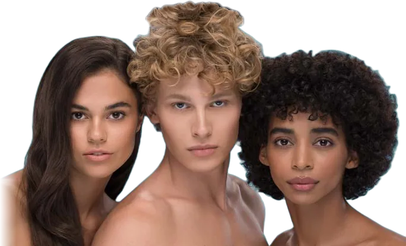

Eau thermale · дермокосметика
Облегчение для чувствительной кожи
Выберите удобный способ покупки: аптеки, интернет-магазины или маркетплейсы. Здесь же каталог всех линеек Dermedic.

Рекомендованодерматологами
Где купить
Выберите, где удобнее
Нажмите на тип магазина, чтобы увидеть всех наших партнёров. Каждая ссылка ведёт прямо на сайт магазина.
9 линеек
Вся продукция Dermedic
Описание каждого средства, для какой кожи оно подходит и где его купить.
Открыть каталог
Будьте с нами
Советы по уходу за чувствительной кожей, новинки и акции.